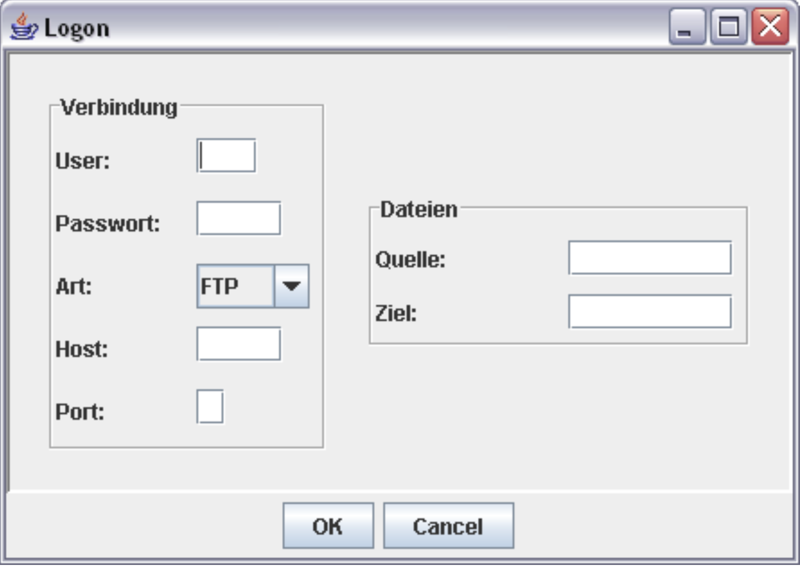

# Programmieren II ### Matthias Berg-Neels > [Download Skript](../pdfdownloads/ProgrammierenSkript_2Semester.pdf) ---- ## Kapitelübersicht - Programmieren 2 <ol start="8"> <li>Exception Handling</li> <li>Collection Framework</li> <li>Swing</li> <li>Optional: Input- & Output-Streams</li> <li>Datenstrukturen</li> <li>Algorithmen</li> </ol> ### Exkurse * Unit Testing * Innere Klassen --- # Exkurs # Unit Testing > siehe "Exkurs" Skript --- # Kapitel 8 # Exception Handling ---- ## Kapitelübersicht - Programmieren 2 <ol start="8"> <li><b>Exception Handling</b></li> <li>Collection Framework</li> <li>Swing</li> <li>Optional: Input- & Output-Streams</li> <li>Datenstrukturen</li> <li>Algorithmen</li> </ol> ---- ## Lernziele * Sie kennen die unterschiedlichen Ausnahmen in Java * Sie können eigene Ausnahmeklassen definieren * Sie können Ausnahmen auslösen und weitergeben * Sie können Ausnahmen behandeln und das Ausnahmenkonzept in Java erläutern * Sie können den Unterschied zwischen ckecked und unchecked Exceptions erklären --- ## Fehler in Java <table> <tr style="vertical-align:middle"> <td width=50%> <b>Compiler-Fehler</b> <ul> <li>syntaktische Fehler werden beim Kompilieren erkannt</li> </ul> **Laufzeitfehler** <ul> <li>Fehler (Error) sollte nicht behandelt werden</li> <li>Ausnahmen (Exceptions) <ul> <li>Exception muss behandelt werden</li> <li>RuntimeException kann behandelt werden</li> </ul> </li> </ul> </td> <td style="vertical-align:middle"> <div> <!-- .element style="border: 0px; box-shadow: 0 0 0 0" --> </div><!-- .element align="center" --> </td> </tr> </table> ---- ## Grundprinzip der Ausnahmebehandlung * Laufzeitfehler oder explizite Anweisung löst Ausnahme aus * 2 Möglichkeiten der Fehlerbehandlung * Direkte Fehlerbehandlung im auslösenden Programmteil * Weitergabe der Ausnahme an die aufrufende Methode * bei Weitergabe liegt die Entscheidung beim Empfänger * Er kann die Ausnahme behandeln * Er kann die Ausnahme an seinen Aufrufer weitergeben * wird die Ausnahme nicht behandelt, führt sie zur Ausgabe einer Fehlermeldung und zum Programmabbruch (Laufzeitfehler) ---- ## Ausnahmen behandeln <div> <!-- .element style="border: 0px; box-shadow: 0 0 0 0" --> </div><!-- .element align="center" --> * Überwachung des Codingbereichs, in dem Ausnahmen ausgelöst werden können * spezieller Code zur Behandlung aufgetretener Ausnahmen --- ## Eigene Ausnahmeklassen ---- ## Erzeugen eigener Ausnahmeklassen ```java public class TankLeer extends Exception { public TankLeer (int km) { super("Der Tank ist nach " + km + " Kilometern leer."); } } ``` <div> <!-- .element style="border: 0px; box-shadow: 0 0 0 0" --> </div><!-- .element align="center" --> ---- ## Ausnahmen explizit auslösen und weitergeben ```Java public class Auto { // ... public void fahren() throws TankLeer { while (true) { if (fuel > 0) { fuel -= 6; tagesKM += 100; kmCount += 100; } else { throw new TankLeer(tagesKM); } } } //... } ``` * Definition der möglichen Ausnahmen in Methoden-Signatur: ``` throws``` * Erzeugen eines neuen Ausnahme-Objektes: ``` new TankLeer(tagesKM)``` * Auslösen (werfen) der Ausnahme (im Ausnahmefall) innerhalb der Methode: ``` throw``` ---- ## Ausnahme behandeln ```Java public class TankLeerDemo { public static void main(String[] args) { Auto bmw = new Auto(0, 35487); //... try { bmw.fahren(); } catch (TankLeer e1) { System.out.println(e1.getMessage()); System.out.println(e1.toString()); e1.printStackTrace(); } catch (Exception e2) { e2.printStackTrace(); } // ... finally { System.out.println("Der neue Kilometerstand: " + bmw.getKmCount()); } //... } } ``` * ```try``` markiert den Überwachungsbereich - ausgelöste Ausnahmen beenden die Ausführung des Überwachungsbereiches umgehend * ```catch``` fängt mögliche Ausnahmen aus dem Überwachungsbereich auf * ```finally``` wird unabhängig vom Auftreten von Ausnahmen zum Abschluss des ```try-catch```-Blocks ausgeführt ---- ## try-with-Resource (Ausblick: Kapitel 11) * vermeiden unschöner Schachtelung von try-Blöcken * ABER: andere Reihenfolge im Vergleich zur ```finally``` Ausführung * Voraussetzung: Resource implementiert ```Closable``` Interface * automatisches schließen der Resourcen nach try-Block * Exceptions beim schließen werden innerhalb der Catch-Blöcke mit abgefangen ```Java import java.io.*; public class SchreibenInDatei { public static void main(String[] args) { File datei = new File(System.getProperty("user.dir") + "\\DemoLesen2.txt"); try (FileWriter schreiber = new FileWriter(datei)) { datei.createNewFile(); schreiber.write("Dies ist eine Schreibdemo."); schreiber.write("Es werden mehrere Zeilen geschrieben."); } catch (IOException e) { e.printStackTrace(); } } } ``` --- ## Wichtige Methoden der Klasse Throwable <div> ```public String getMessage()``` * liefert den Fehlertext zurück ``` Der Tank ist nach 1100 Kilometern leer. ``` ```public String toString()``` * liefert die Objektbeschreibung und den Fehlertext zurück ``` prog2.demos.exceptions.TankLeer: Der Tank ist nach 1100 Kilometern leer. ``` ```public void printStackTrace()``` * liefert die Objektbeschreibung, den Fehlertext sowie die Weitergabehierarchie bis zur genauen Auslösestelle zurück ``` prog2.demos.exceptions.TankLeer: Der Tank ist nach 1100 Kilometern leer. at prog2.demos.exceptions.Auto.fahren(Auto.java:21) ``` </div><!-- .element style="font-size: 0.85em;" --> --- ## Checked VS. Unchecked Exceptions <table width=100%> <tr><td width=50%>Checked</td><td>Unchecked</td></tr> <tr><td> + müssen verarbeitet werden * abfangen mit try / catch * weiterleiten mit ```throws``` * werden explizit ausgelöst ```throw``` </td><td> * treten zur Laufzeit auf (RuntimeException) * werden automatisch an den Aufrufer weitergegeben * können abgefangen werden ```try / catch``` * oftmals logische Programmfehler * ```Division by Zero``` * ```NullPointerException``` * ```IndexOutOfBoundsException``` </td></tr> </table> --- ## Ausnahmen in JUnit-Tests * spezielle Assertion * Rückgabe des Ausnahme Objektes * schlägt fehl, wenn keine oder eine andere Ausnahme zurück geworfen wird ```Java Assertions.assertThrows(<Erwartete Ausnahme Klasse>. <Executable Interface>[, <Message>]); ``` * Assertion für den gegenläufigen Fall * schlägt fehl, wenn eine Ausnahme geworfen wird ```Java Assertions.assertDoesNotThrow(<Executable Interface> [, <Message>]); ``` * (!) JUnit4: spezielles Attribut in ```@Test``` Annotation ```Java @Test(expected = <Erwartete Ausnahme Klasse>) ``` --- # Exkurs # Innere Klassen > siehe "Exkurs" Skript --- # Kapitel 9 # Collection Framework ---- ## Kapitelübersicht - Programmieren 2 <ol start="8"> <li>Exception Handling</li> <li><b>Collection Framework</b></li> <li>Swing</li> <li>Optional: Input- & Output-Streams</li> <li>Datenstrukturen</li> <li>Algorithmen</li> </ol> ---- ## Lernziele * Sie können die Unterschiede der 3 Objekt-Containerarten erklären * Sie können Objekte in den Containern einfügen, löschen und finden * Sie können mit Iteratoren die Container durchlaufen * Sie können sortierbare Container mit Comparable und Comparator sortieren * Sie können die ```equals()``` und die ```hashCode()``` Methode in eigenen Klassen überschreiben * Sie können den Zusammenhang zwischen den Methoden ```equals()``` , ```hashCode()``` und ```compareTo()``` erklären --- ## Datenstrukturen und -container <div> <!-- .element style="border: 0px; box-shadow: 0 0 0 0"--> </div><!-- .element align="center" --> Das Collection Framework bietet generische Container * können verschiedenste Objekte enthalten * können beliebig viele Objekte aufnehmen * können auf bestimmte Objekte typisiert werden ---- ## Überblick über das Collection Framework <div> <!-- .element style="border: 0px; box-shadow: 0 0 0 0"--> </div><!-- .element align="center" --> ---- ## Die drei Arten von Containern <div> Listen (List) * Zugriff sequentiell oder wahlfrei * Duplikate erlaubt * Reihenfolge des Einfügens bleibt erhalten Mengen (Set) * Zugriff erfolgt über Iteratoren * keine Duplikate * Reihenfolge des Einfügens bleibt nicht erhalten Schlüssel-Werte-Paare (Map) * zusammengehörige Objektpaare * Schlüssel sind immer eindeutig * Zugriff über Schlüssel </div><!-- .element style="font-size: 0.9em;" --> --- ## Listen > List ---- ## Das Interface [```List```](https://docs.oracle.com/en/java/javase/15/docs/api/java.base/java/util/List.html) * befindet sich im Package java.util * Zugriff auf die Container erfolgt sequentiell oder wahlfrei (über Index) * sequentieller Zugriff erfolgt über Iteratoren * Index beginnt mit 0 und endet bei n Elementen bei n-1 * Größe der Liste wird dynamisch beim Einfügen oder Löschen von Elementen angepasst * Duplikate sind erlaubt * die Reihenfolge, in der Elemente eingefügt werden, bleibt erhalten * meist genutzte Implementierung: ```ArrayList``` & ```Vector``` * intern als Arrays realisiert * Hauptunterschied zwischen ArrayList und Vector: Zugriffsmethoden auf Vector sind synchronisiert (wichtig bei Threads) ---- ## Wesentliche Methoden im Umgang mit Listen <div> * ```add(int i, Object o)``` oder ```add(Object o)``` fügt neue Objekte in die Liste ein * ```set(int i, Object o)``` überschreibt das Objekt an der Stelle i mit dem Objekt o * ```get(int i)``` liefert das Objekt an der Stelle i zurück * ```contains(Object o)``` überprüft, ob das Objekt o in der Liste enthalten ist * ```indexOf(Object o)``` liefert den Index zurück, an der das Objekt o in der Liste abgelegt ist (-1, wenn das Objekt nicht enthalten ist) * ```remove(int i)``` oder remove(Object o) löscht das Objekt aus der Liste * ```clear()``` initialisiert die Liste * ```size()``` liefert die Länge der Liste zurück </div><!-- .element style="font-size: 0.9em;" --> ---- ## Der Umgang mit Iteratoren <div> Merkmale von Iteratoren * einheitlicher Standard zum Durchlaufen von Datencontainern * Container wird sequentiell durchlaufen * es können keine Elemente übersprungen werden * der Container kann sowohl vorwärts als auch rückwärts durchlaufen werden * bei Änderung des Containerinhalts muss der Iterator neu erzeugt werden Wichtige Iterator-Methoden * ```hasNext()``` überprüft, ob das aktuelle Element im Container noch einen Nachfolger hat * ```next()``` greift auf das nächste Element des Containers zu * ```remove()``` löscht das Element aus dem Container, welches zuletzt vom Iterator gelesen wurde </div><!-- .element style="font-size: 0.9em;" --> ---- ## Beispiel für eine List mit Iteratoren <div> ```Java import java.util.List; import java.util.ArrayList; import java.util.Iterator; import prog2.demos.exceptions.Auto; public class ListDemo { public static void main(String[] args) { List myList = new ArrayList(); myList.add("Otto"); myList.add("Karl"); myList.add("Ludwig"); myList.add(new Auto(0, 0)); myList.add(2,"Otto"); myList.set(3,"Überschreibt den Ludwig"); System.out.println(myList.contains("Otto")); System.out.println(myList.indexOf("Ludwig")); System.out.println(myList.get(3)); System.out.println(myList.size()); Iterator i = myList.iterator(); while (i.hasNext()) { System.out.println(i.next()); } myList.clear(); System.out.println(myList.size()); } } ``` </div><!-- .element style="font-size: 0.7em;" --> --- ## Mengen > Set ---- ## Die Klasse TreeSet * befindet sich im Package java.util * Zugriff auf die Container erfolgt sequentiell über Iteratoren * Größe der Liste wird dynamisch beim Einfügen oder Löschen von Elementen angepasst * Duplikate sind nicht erlaubt (Vergleich über die equals-Methode) * die Reihenfolge, in der Elemente eingefügt werden, bleibt nicht erhalten * implementiert ```SortedSet```-Interface; sortiert nach einer vorgegebenen Ordnung * natürliche Ordnung durch das ```Comparable```-Interface * beliebige/externe Sortierung durch ein Objekt entsprechend dem ```Comparator```-Interface ---- ## Beispiel für eine Menge mit Iteratoren <div> ```Java import java.util.Set; import java.util.TreeSet; import java.util.Iterator; public class SetDemo { public static void main(String[] args) { Set mySet = new TreeSet(); mySet.add("Otto"); mySet.add("Karl"); mySet.add("Ludwig"); System.out.println(mySet.contains("Otto")); System.out.println(mySet.size()); Iterator i = mySet.iterator(); while (i.hasNext()) { System.out.println(i.next()); } mySet.clear(); System.out.println(mySet.size()); } } ``` </div><!-- .element style="font-size: 0.9em;" --> --- ## Ordnung und Sortierung von Objekten ---- ## Das Interface [```Comparable```](https://docs.oracle.com/en/java/javase/15/docs/api/java.base/java/lang/Comparable.html) * sortiert Elemente beim Einfügen in Sets oder Maps (welche auf ```SortedSet``` basieren) * soll die "natürliche Ordnung" der Objekte widerspiegeln * Voraussetzung für Datencontainer vom Typ ```SortedSet``` oder ```SortedMap``` (sofern keine externe Sortierung über eine ```Comparator``` Implementierung gegeben ist) * beinhaltet genau eine Methode: public int ```compareTo(Object o)``` * Bedeutung der Rückgabewert --> ```aufgerufenesObjekt.compareTo(übergebenesObjekt)``` * ```Wert < 0```: das aufgerufene Objekt ist kleiner als das übergebene Objekt * ```Wert = 0```: das aufgerufene Objekt ist gleich dem übergebenen Objekt * ```Wert > 0```: das aufgerufene Objekt ist größer als das übergebene Objekt * Beispiel: ```Java "a".compareTo("c"); // --> ergibt -2 "c".compareTo("c"); // --> ergibt 0 "c".compareTo("a"); // --> ergibt 2 ``` ---- ## Beispiel für eine Comparable-Implementierung ```Java public class Student implements Comparable { private String vorname; private String nachname; private int matrikelNo; public Student(String vorname, String name, int matrikelNo) { this.vorname = vorname; this.nachname = name; this.matrikelNo = matrikelNo; } // ... public int compareTo(Object vStudent) { return this.matrikelNo - ((Student) vStudent).getMatrikelNo(); } } ``` ---- ## Beispiel TreeSet mit eigener Comparable-Implementierung ```Java import java.util.Iterator; import java.util.TreeSet; public class DemoMenge1 { public static void main(String[] args) { TreeSet menge = new TreeSet(); menge.add(new Student("Peter", "Maier", 75382)); menge.add(new Student("Hans", "Müller", 65871)); menge.add(new Student("Karl", "Schmidt", 19853)); menge.add(new Student("Hans", "Müller", 65872)); menge.add(new Student("Karl", "Schmidt", 19853)); Iterator i = menge.iterator(); while(i.hasNext()) { Student studie = (Student) i.next(); System.out.println(studie.getMatrikelNo() + " " + studie.getVorname() + " " + studie.getNachname()); } } } ``` ---- ## Das Interface [```Comparator```]() * sortiert Elemente beim Einfügen in Sets oder Maps * Sortierung erfolgt nach einer beliebigen Sortierreihenfolge und übersteuert die natürliche Ordnung * ```Comparator``` sollten in eigener Klasse implementiert werden (auch innere Klassen oder Lamdafunktionen) * zur Verwendung des Comparators wird ein Objekt der implementierende Klasse dem Konstruktor des Sets oder der Map übergeben * beinhaltet genau eine Methode: ```public int compare(Object o1, Object o2)``` * Beeutung der Rückgabewerte * ```Wert < 0```: o1 liegt vor o2 * ```Wert = 0```: o1 und o2 sind gleich * ```Wert > 0```: o1 liegt hinter o2 ---- ## Beispiel für eine Comparator-Implementierung ```Java import java.util.Comparator; public class StudentComparator implements Comparator{ public int compare(Object obj1, Object obj2) { Student studie1 = (Student) obj1; Student studie2 = (Student) obj2; if ((studie1.getNachname().compareTo(studie2.getNachname())) != 0) { return studie1.getNachname().compareTo(studie2.getNachname()); } else if ((studie1.getVorname().compareTo(studie2.getVorname())) != 0) { return studie1.getVorname().compareTo(studie2.getVorname()); } else if ((studie1.getMatrikelNo() - studie2.getMatrikelNo()) != 0) { return studie1.getMatrikelNo() - studie2.getMatrikelNo(); } return 0; } } ``` ---- ## Beispiel TreeSet mit eigener Comparator-Implementierung ```Java import java.util.*; public class DemoMenge1 { public static void main(String[] args) { TreeSet menge = new TreeSet(new StudentComparator()); menge.add(new Student("Peter", "Maier", 75382)); //... menge.add(new Student("Karl", "Maier", 85383)); Iterator i = menge.iterator(); while(i.hasNext()) { Student studie = (Student) i.next(); System.out.println(studie.getMatrikelNo() + " " + studie.getVorname() + " " + studie.getNachname()); } } } ``` ---- ## Sortieren von Listen * Listen (```Vector```, ```ArrayList```, ...) sind normalerweise unsortiert * die Klasse ```Collections``` bietet eine überladene Sortiermethode zum Sortieren von List-Objekten an * folgende Sortiermöglichkeiten werden angeboten * ```static void sort(List liste)``` * sortiert die Liste nach der natürlichen Ordnung * dazu müssen die Klassen das Interface Comparable implementieren, deren Instanzen in der Liste gespeichert sind * ```static void sort(List liste, Comparator c)``` * übersteuert die natürliche Ordnung und sortiert die Objekte der Liste über den entsprechenden Comparator c --- ## Vergleichen von Objekten > ```equals()``` und ```hashCode()``` > ... und ```compareTo(Object o)``` ---- ## Der Vergleich von Objekten * Vergleich mit dem ==-Operator prüft, ob es sich um die identische Speicherreferenz handelt * inhaltliche Vergleiche erfolgen über die ```equals()```-Methode (```equals()```-Methode der Klasse Object entspricht dem ==-Operator) * der <a target=_blank href="https://docs.oracle.com/en/java/javase/15/docs/api/java.base/java/lang/Object.html#equals(java.lang.Object)">equals-Contract</a> aus der Dokumentation zur Klasse Object * reflexiv: jedes Objekt liefert beim Vergleich mit sich selbst true * symmetrisch: x verglichen mit y liefert das gleiche Ergebnis, wie der Vergleich von y mit x * transitiv: wenn x gleich y und y gleich z ist, dann ist auch x gleich z * konsistent: solange sich zwei Objekte nicht verändern, liefert der Vergleich der beiden Objekte immer das gleiche Ergebnis * Objekte müssen von null verschieden sein ---- ## Das Überschreiben der ```equals()```-Methode <table> <tr> <th width=50%>direkte Sub-Klasse von Object</th> <th>indirekte Sub-Klasse von Object</th> </tr> <tr> <td> <ul> <li>Alias-Check mit dem ==-Operator</li> <li>Test auf null</li> <li>Typverträglichkeit überprüft, ob es sich um Instanzen der gleichen Klasse handelt</li> <li>Feld-Vergleich überprüft die inhaltliche Gleichheit der Attribute</li> </ul> </td> <td> <ul> <li>Alias-Check mit dem ==-Operator</li> <li>Delegation an die Oberklasse ermöglicht die Prüfung der Gleichheit der von der Oberklasse geerbten Anteile</li> <li>Feld-Vergleich überprüft die inhaltliche Gleichheit der Attribute der Sub-Klasse</li> </ul> </td> </tr> </table><!-- .element style="font-size: 0.9em;" --> ---- ## Das Überschreiben der ```equals()```-Methode ### direkte Subklasse von ```Object``` <div> ```Java public class Haustier { private String art; private int gewicht; //... public boolean equals(Object objekt) { // Alias-Check if (this == objekt) { return true; } // Test auf null if (objekt == null){ return false; } // Typverträglichkeit if (objekt.getClass() != this.getClass()){ return false; } // Feldvergleich if(!this.art.equals(((Haustier) objekt).getArt())){ return false; } if(!(this.gewicht == ((Haustier) objekt).getGewicht())) { return false; } return true; } } ``` </div><!-- .element style="font-size: 0.7em;" --> ---- ## Das Überschreiben der ```equals()```-Methode ### indirekte Subklasse von ```Object``` <div> ```Java public class Hund extends Haustier { private String rasse; //... public boolean equals(Object objekt) { // Alias-Check if (this == objekt){ return true; } // Delegation an super if (!super.equals(objekt)){ return false; } // Feldvergleich if (!this.rasse.equals(((Hund) objekt).getRasse())){ return false; } return true; } } ``` </div><!-- .element style="font-size: 0.7em;" --> ---- ## Zusammenhang ```hashCode()``` und ```equals()``` <div> * Verwendung für die Verwaltung der Einträge in hash-basierten Datencontainern (HashSet, HashMap, ...) * korrekte Verwaltung der Einträge basiert auf folgender Bedingung (<a target=_blank href="https://docs.oracle.com/en/java/javase/15/docs/api/java.base/java/lang/Object.html#hashCode()">hashCode-Contract</a>) * wenn ```o1.equals(o2)``` den Wert ```true``` liefert, * dann muss ```o1.hashCode()``` den gleichen Wert ergeben, wie ```o2.hashCode()``` * sobald die ```equals()```-Methode überschrieben wird, muss auch die ```hashCode()```-Methode überschrieben werden, so dass o.g. Bedingung erfüllt wird * Vorschlag zur Implementierung * Verwendung der Attribute, die bei der Implementierung der ```equals()```-Methode verwendet werden * Ermittlung der Hash-Codes der ausgewählten Attribute einer Klasse * Addition oder bitweise Verknüpfung mit exklusivem Oder der einzelnen Hash-Codes </div><!-- .element style="font-size: 0.85em;" --> ---- ## Überschreiben von ```hashCode()``` ```Java public class Haustier { private String art; private int gewicht; //... // Getter- und Setter-Methoden public boolean equals(Object objekt) { //... } public int hashCode() { return this.getArt().hashCode() ^ this.getGewicht(); } } ``` ```Java public class Hund extends Haustier { private String rasse; //... public boolean equals(Object objekt) { //... } public int hashCode() { return super.hashCode() ^ this.rasse.hashCode(); } } ``` ---- ## ```hashCode()``` – Alternative Implementierung <div> |Typ|Zugeordneter Integer Wert|einfaches Leben| |---|-------------------------|---------------| |Boolean|```(value ? 0 : 1)```|```Boolean.hashCode(value)```| |byte, char, short, int|```(int)value```|| |long|```(int)(value ^ (value >>> 32))```|```Long.hashCode(value)```| |float|```Float.floatToIntBits(value)```|```Float.hashCode(value)```| |double|```Double.doubleToLongBits(value)``` [anschliessende Behandlung wie bei long]|```Double.hashCode(value)```| |Referenz|```((value==null) ? 0 : value.hashCode())```|```Objects.hashCode(value)```| </div><!-- .element style="font-size: 0.8em;" --> ---- ## ```hashCode()``` – Alternative Implementierung ```Java public class Haustier { private String art; private int gewicht; // ... public int hashCode() { int hc = 17; // beliebiger Initialwert int hashMultiplier = 59; // beliebige (kleine) Primzahl hc = hc * hashMultiplier + (field==null) ? 0 : field.hashCode()) + gewicht; return hc; } } ``` ---- ## Was hat das mit ```Comparable``` zu tun? * ```compareTo()``` sortiert Objekte nach einer "natürlichen" Ordnung * Rückgabe Wert 0: die Objekte sind gleich * damit sollte der Rückgabewert 0 für zwei Objekte einem Rückgabewert von true beim vergleich mit ```equals()``` entsprechenden (<a target=_blank href='https://docs.oracle.com/en/java/javase/15/docs/api/java.base/java/lang/Comparable.html'>Comparable-Contract</a>) > ```equals()``` und ```compareTo()``` sollten sich konsistent verhalten * Zusammengefasst: ```equals()```, ```hashCode()``` und ```compareTo()``` **sollten** für ein Objekt immer auf den gleichen Attributen basieren --- ## Schlüssel-Werte-Paare > Maps ---- ## Das Interface `Map` * befindet sich im Package java.util * ist kein Sub-Interface von Collection * es werden immer Schlüssel-Werte-Paare eingefügt * jeder Schlüssel ist eindeutig * wird mit dem gleichen Schlüssel ein weiterer Wert eingefügt, so wird der erste Wert überschrieben * Zugriff auf die Werte-Objekte erfolgt über die Schlüssel * zwei wesentliche Vertreter * TreeMap: Einträge werden nach Schlüsseln sortiert -> Schlüssel- Klasse muss das Interface Comparable implementieren * HashMap: auf Basis der hashCode()-Methode der Schlüsselklasse wird eine interne Position (Bucket) berechnet, an der das Schlüssel- Werte-Paar in die Map aufgenommen wird ---- ## Wesentliche Methoden im Umgang mit Maps <div> * ```keySet()``` liefert ein Set der Schlüssel einer Map ohne Duplikate zurück * ```values()``` liefert eine Collection der Werte einer Map zurück (Duplikate erlaubt) * ```put(Object k, Object v)``` nimmt ein Schlüssel-Werte-Paar in die Map auf * ```get(Object k)``` liefert den Wert zum Schlüssel-Objekt k zurück l containsKey(Object k) liefert true zurück, wenn zu dem Schlüssel k ein Eintrag in der Map enthalten ist * ```containsValue(Object v)``` liefert true zurück, wenn zu dem Wert v ein Eintrag in der Map enthalten ist * ```remove(Object k)``` löscht den Eintrag zum Schlüssel k aus der Map * ```size()``` liefert die Länge der Map zurück * ```clear()``` initialisiert die Map </div><!-- .element style="font-size: 0.9em;" --> ---- ## Beispiel für eine TreeMap mit Iteratoren <div> ```Java import java.util.Set; import java.util.Iterator; import java.util.TreeMap; public class DemoMap { public static void main(String[] args) { TreeMap paar = new TreeMap(); paar.put(new Integer(130),new Hund(20, "Collie")); paar.put(new Integer(110),new Hund(50, "Bernhardiner")); paar.put(new Integer(100),new Hund(18, "Labrador")); paar.put(new Integer(120),new Hund(30, "Schäferhund")); paar.put(new Integer(130),new Hund(20, "Cocker")); Set schluessel = paar.keySet(); Iterator i = schluessel.iterator(); while (i.hasNext()) { Integer a = (Integer) i.next(); Hund dog = (Hund) paar.get(a); System.out.println("Schlüssel: " + a + " Wert: " + dog.getRasse()); } System.out.println(paar.size()); } } ``` </div><!-- .element style="font-size: 0.8em;" --> --- ## Wrapper-Klassen ---- ## Umgang mit Wrapper-Klassen <div> * statt elementarer Datentypen werden Objekte erwartet (z.B. in Datencontainern) * um elementare Datentypen in Objekten zu kapseln, gibt es die Wrapper-Klassen * stellen Methoden zur Ein- und Ausgabe sowie zur Manipulation zur Verfügung * stellen Methoden zur Umwandlung von Datentypen zur Verfügung * Wrapper-Klassen existieren für folgende Datentypen * boolean, byte, char, double, float, int, long, short * Auto-Boxing / Auto-Unboxing * Java erstellt automatisch ein Objekt der passenden Wrapper-Klasse wenn ein Objekt erwartet, aber ein einfacher Datentyp bereitgestellt wird (Auto-Boxing) * umgekehrt wird der Wert als einfacher Datentyp bereitgestellt, wenn ein Objekt der Wrapper-Klasse zurückgegeben wird (Auto-Unboxing) </div><!-- .element style="font-size: 0.9em;" --> --- # Kapitel 10 # Swing ---- ## Kapitelübersicht - Programmieren 2 <ol start="8"> <li>Exception Handling</li> <li>Collection Framework</li> <li><b>Swing</b></li> <li>Optional: Input- & Output-Streams</li> <li>Datenstrukturen</li> <li>Algorithmen</li> </ol> ---- ## Lernziele * Sie können den wesentlichen Unterschied zwischen AWT und Swing erläutern * Sie können mit Swing einfache Fenster erzeugen und schließen * Sie können unterschiedliche Layouts in Verbindung mit Panels einsetzen * Sie können einfache Benutzerdialoge mit ausgewählten Swing-Komponenten erstellen * Sie können validierende Textfelder erstellen * Sie können die Interfaces Action- und ItemListener einsetzen * Sie können eigene Menüs implementieren * Sie können die Benutzeroberfläche mit Panels, Rahmen und Tooltips ergänzen --- ## Abgrenzung von AWT und Swing <div> AWT (Abstract Window Toolkit) arbeitet mit „Heavyweight components“ * Verwendung von plattformspezifischen Implementierungen der AWT-Klassen (nicht in Java implementiert !) * AWT-Komponenten besitzen einen Partner auf Betriebssystemseite (Peer), der Darstellung und Funktionalität steuert * Vorteil: sehr schnell, da die Peer-Klassen im Code der Ausführungsplattform geschrieben sind Swing arbeitet mit „Lightweight components“ * es werden nur sehr wenige plattformspezifische GUI-Ressourcen verwendet * lightweight components besitzen keinen Peer auf Betriebssystemseite * Swing besitzt zahlreiche zusätzliche GUI-Komponenten * Vorteil: „bessere“ Plattformunabhängigkeit * Nachteil: im Vergleich zu AWT eher langsam </div><!-- .element style="font-size: 0.9em;" --> ---- ## Abgrenzung von AWT und Swing <div> <!-- .element style="border: 0px; box-shadow: 0 0 0 0" --> </div><!-- .element align="center" --> --- ## <a target=_blank href='https://docs.oracle.com/en/java/javase/15/docs/api/java.desktop/javax/swing/JFrame.html'>```JFrame```</a> ---- ## Aufbau eines Swing-Fensters mit ```JFrame``` <div> <!-- .element style="border: 0px; box-shadow: 0 0 0 0" --> </div><!-- .element align="center" --> * Hauptkomponente eines JFrames ist die RootPane * darunter folgt eine Hierarchie sogenannter Panels * neue Komponenten werden der ContentPane zugeordnet und nicht dem JFrame * Java Tutorial <a target=_blank href='https://docs.oracle.com/javase/tutorial/uiswing/components/rootpane.html'>"How to use rootPane"</a> ---- ## Wichtige Methoden für JFrames <div> * überladener Konstruktor, u.a. zum Setzen des Titels * ```setDefaultCloseOperation(int i)``` legt fest, was beim Schließen des Fensters passiert * Konstanten, die o.g. Methode übergeben werden können * ```WindowConstants.DO_NOTHING_ON_CLOSE``` löst lediglich das Close-Event aus * ```WindowConstants.HIDE_ON_CLOSE``` versteckt das Fenster * ```WindowConstants.DISPOSE_ON_CLOSE``` zerstört den Frame * ```WindowConstants.EXIT_ON_CLOSE``` beendet die Applikation * Getter- und Setter-Methoden für die Panels eines JFrames, z.B. ```getContentPane()``` * Methoden aus der Klasse ```java.awt.Window``` * ```setBounds(int x, int y, int width, int heigth)``` * ```pack()``` passt die Fenstergröße an den Content an * ```setVisible(boolean b)``` aus der Klasse java.awt.Component </div><!-- .element style="font-size: 0.9em;" --> --- ## <a target=_blank href='https://docs.oracle.com/en/java/javase/15/docs/api/java.desktop/java/awt/LayoutManager.html'>```Layoutmanager```</a> ---- ## Layouts im Rahmen von Swing <div> * Anordnung der Elemente eines Containers nach bestimmten Verfahren über Layout-Manager * wesentliche Layout-Manager * <a target=_blank href='https://docs.oracle.com/en/java/javase/15/docs/api/java.desktop/java/awt/FlowLayout.html'>```FlowLayout```</a> ordnet seine Elemente von links nach rechts * <a target=_blank href='https://docs.oracle.com/en/java/javase/15/docs/api/java.desktop/java/awt/BorderLayout.html'>```BorderLayout```</a> ermöglicht eine Anordnung in 5 verschiedenen Bereichen (NORTH, EAST, SOUTH, WEST und CENTER) * <a target=_blank href='https://docs.oracle.com/en/java/javase/15/docs/api/java.desktop/java/awt/GridLayout.html'>```GridLayout```</a> ermöglicht die Anordnung der Komponenten in Zeilen und Spalten von links nach rechts und von oben nach unten * mit der Methode ```setLayout(LayoutManager l)``` wird für ein JFrame der Layout-Manager gesetzt </div><!-- .element style="font-size: 0.7em;" --> <div> <!-- .element style="border: 0px; box-shadow: 0 0 0 0" --> </div><!-- .element align="center" --> ---- ## <a target=_blank href='https://docs.oracle.com/en/java/javase/15/docs/api/java.desktop/javax/swing/JPanel.html'>```JPanel```</a> ---- ## Der Container JPanel * JPanel ist eine weitere Container-Form * ordnet mehrere Elemente unter der Kontrolle eines Layoutmanagers an * Layoutmanager und Komponenten werden direkt dem Panel zugewiesen * bereits dem Konstruktor wird der Layoutmanager mitgegeben l über die add()-Methode werden die Komponenten dem Panel zugeordnet ---- ## JPanel Beispiel ```Java import java.awt.FlowLayout; import javax.swing.*; public class DemoFlow { public static void main(String[] args) { JFrame fenster = new JFrame("Flow"); fenster.setDefaultCloseOperation(WindowConstants.EXIT_ON_CLOSE); JPanel p = new JPanel(new FlowLayout(0)); p.add(new JLabel("Beschreibung")); p.add(new JTextField(20)); fenster.getContentPane().add(p); fenster.pack(); fenster.setVisible(true); } } ``` ---- ## Beispiel: Einsatz von JPanel und Layouts <div> <!-- .element style="border: 0px; box-shadow: 0 0 0 0" --> </div><!-- .element align="center" --> <div> * Hauptfenster = BorderLayout * rot und grün umrahmtes Panel =FlowLayout * blau umrahmte Panels = GridLayout, wobei jedes einzelne Feld auf einem eigenen Panel mit FlowLayout liegt </div><!-- .element style="font-size: 0.8em;" --> --- ## Rahmen mit dem <a target=_blank href='https://docs.oracle.com/en/java/javase/15/docs/api/java.desktop/javax/swing/border/Border.html'>```Border```</a> Interface ---- ## Panels mit Rahmen hervorheben * Rahmen sind über Klassen relisiert, die das Interface <a target=_blank href= 'https://docs.oracle.com/en/java/javase/15/docs/api/java.desktop/javax/swing/border/Border.html'>```Border```</a> implementieren * Rahmen sollten nicht direkt über die Konstruktoren der Rahmen-Klassen sondern über die Klassenmethoden der <a target=_blank href='https://docs.oracle.com/en/java/javase/15/docs/api/java.desktop/javax/swing/BorderFactory.html'>```BorderFactory```</a> erzeugt werden * jeder Swing-Komponente kann mit der Methode ```setBorder(Border b)``` ein Rahmen zugewiesen werden * einige Standardrahmen sind in Swing bereits implementiert ---- ## Verschiedene Rahmen <div> |Klasse|Rahmenart| |:----:|:--------| |<a target=_blank href='https://docs.oracle.com/en/java/javase/15/docs/api/java.desktop/javax/swing/border/AbstractBorder.html'>```AbstractBorder```</a>|eine abstrakte Klasse, die die Schnittstelle minimal implementiert| |<a target=_blank href='https://docs.oracle.com/en/java/javase/15/docs/api/java.desktop/javax/swing/border/BevelBorder.html'>```BevelBorder```</a>|ein 3D-Rahmen, der eingelassen sein kann| |<a target=_blank href='https://docs.oracle.com/en/java/javase/15/docs/api/java.desktop/javax/swing/border/CompoundBorder.html'>```CompoundBorder```</a>|ein Rahmen, der andere Rahmen aufnehmen kann| |<a target=_blank href='https://docs.oracle.com/en/java/javase/15/docs/api/java.desktop/javax/swing/border/EmptyBorder.html'>```EmptyBorder```</a>|Rahmen, dem freier Platz zugewiesen werden kann| |<a target=_blank href='https://docs.oracle.com/en/java/javase/15/docs/api/java.desktop/javax/swing/border/EtchedBorder.html'>```EtchedBorder```</a>|noch deutlicher markierter Rahmen| |<a target=_blank href='https://docs.oracle.com/en/java/javase/15/docs/api/java.desktop/javax/swing/border/LineBorder.html'>```LineBorder```</a>|Rahmen in einer einfachen Farbe in gewünschter Dicke| |<a target=_blank href='https://docs.oracle.com/en/java/javase/15/docs/api/java.desktop/javax/swing/border/MatteBorder.html'>```MatteBorder```</a>|Rahmen, bestehend aus Kacheln von Icons| |<a target=_blank href='https://docs.oracle.com/en/java/javase/15/docs/api/java.desktop/javax/swing/border/SoftBevelBorder.html'>```SoftBevelBorder```</a>|ein 3D-Rahmen mit besonderen Ecken| |<a target=_blank href='https://docs.oracle.com/en/java/javase/15/docs/api/java.desktop/javax/swing/border/TitledBorder.html'>```TitledBorder```</a>|Rahmen mit String in einer gewünschten Ecke| </div><!-- .element style="font-size: 0.8em;" --> ---- ## Beispiel: Panels mit verschiedenen Rahmen <div> ```Java import javax.swing.BorderFactory; import javax.swing.border.BevelBorder; import javax.swing.border.Border; // ... public class DemoLogonScreen { public DemoLogonScreen() { ... Border rahmen1 = BorderFactory.createEtchedBorder(); Border rahmen2 = BorderFactory.createTitledBorder(rahmen1, "Verbindung"); Border rahmen3 = BorderFactory.createTitledBorder(rahmen1, "Dateien"); Border rahmen4 = BorderFactory.createTitledBorder(rahmen1, "Berechtigungen"); Border rahmen5 = BorderFactory.createBevelBorder(BevelBorder.LOWERED); linkeEingabe.setBorder(rahmen2); rechteEingabe1.setBorder(rahmen3); rechteEingabe2.setBorder(rahmen4); mainPanel.setBorder(rahmen5); // ... } public static void main(String[] args) { DemoLogonScreen fenster = new DemoLogonScreen(); } } ``` </div><!-- .element style="font-size: 0.8em;" --> ---- ## Beispiel: DemoLogonScreen <div> <!-- .element style="border: 0px; box-shadow: 0 0 0 0" --> </div><!-- .element align="center" --> --- ## Swing UI Komponenten ---- ## Beschriftungen und Grafikanzeige mit <a target=_blank href='https://docs.oracle.com/en/java/javase/15/docs/api/java.desktop/javax/swing/JLabel.html'> ```JLabel```</a> <div> * ermöglicht einfache Anzeige von Texten oder Grafiken * zu einem Text kann zusätzlich ein Icon angezeigt werden * bietet die Möglichkeit, HTML-Tags darzustellen * häufiger Einsatz zur Beschriftung andere Dialogkomponenten ```Java import java.awt.GridLayout; import javax.swing.*; public class DemoLabelGrafik { public static void main(String[] args) { JFrame fenster = new JFrame("Bild und Label"); fenster.setDefaultCloseOperation(WindowConstants.EXIT_ON_CLOSE); fenster.setLayout(new GridLayout(2,1)); JLabel text = new JLabel("Hier kommt eine Grafik:"); ImageIcon img = new ImageIcon("G:/BA/Vorlesungen/Programmierung/Demos Vorlesung/Eclipse.jpg"); JLabel bild = new JLabel(img); fenster.getContentPane().add(text); fenster.getContentPane().add(bild); fenster.pack(); fenster.setVisible(true); } } ``` </div><!-- .element style="font-size: 0.8em;" --> ---- ## Unterschiedliche Arten von Textfeldern <div> * einfache Textfelder der Klasse <a target=_blank href='https://docs.oracle.com/en/java/javase/15/docs/api/java.desktop/javax/swing/JTextField.html'>```JTextField```</a> * überladener Konstruktor, um das Feld mit einem String vorzubelegen und/oder die Breite anzugeben * Angabe der Schriftart über die Methode setFont() * Auslesen des Inhalts über die Methode getText() * spezielle Felder für Passwörter der Klasse <a target=_blank href='https://docs.oracle.com/en/java/javase/15/docs/api/java.desktop/javax/swing/JPasswordField.html'>```JPasswordfield```</a> * Konstruktoren analog der Klasse JTextField * Auslesen des Inhalts über die Methode getPassword() * zwei boolsche Methoden cut() und copy(), die überprüfen, ob Werte mit cut (STRG+X) oder copy (STRG+C) aus dem Feld ausgelesen werden dürfen * mehrzeilige Textfelder der Klasse <a target=_blank href='https://docs.oracle.com/en/java/javase/15/docs/api/java.desktop/javax/swing/JTextArea.html'>```JTextArea```</a> * Konstruktoren analog der Klasse JTextField - Unterschied: es muss neben der Breite auch die Höhe des Feldes angegeben werden * Auslesen und ändern der Schriftart analog der Klasse JTextField * Zeilenumbrüche werden bei getText() berücksichtigt </div><!-- .element style="font-size: 0.8em;" --> ---- ## Validierende Textfelder als spezielle Form <div> * realisiert durch die Klasse <a target=_blank href='https://docs.oracle.com/en/java/javase/15/docs/api/java.desktop/javax/swing/JFormattedTextField.html'>```JFormattedTextField```</a> * dem Konstruktor der Klasse wird das Format mitgegeben * mehrere Klassen stehen für die Maskierung zur Verfügung * alle Objekte der Sub-Klassen der Klasse Format (z.B. ```SimpleDateFormat```, ```DecimalFormat```, etc.) * z.B. bei Drücken der Enter-Taste wird die Eingabe überprüft und ein mögliches ActionEvent ausgelöst * Objekte der Klasse <a target=_blank href='https://docs.oracle.com/en/java/javase/15/docs/api/java.desktop/javax/swing/text/MaskFormatter.html'> ```MaskFormatter``` </a> erlauben nur bestimmte Zeichen bei der Eingabe </div><!-- .element style="font-size: 0.8em;" --> <div> |Platzhalter|Beschreibung| |:----------|:-----------| |#|nur Ziffern sind erlaubt| |‚|Escape-Zeichen als Prefix vor einem Platzhalter| |U|erlaubt nur Buchstaben, Kleinbuchstaben werden zu Großbuchstaben konvertiert| |L|erlaubt nur Buchstaben, Großbuchstaben werden zu Kleinbuchstaben konvertiert| |A|nur Ziffern oder Buchstaben sind erlaubt| |?|nur Buchstaben sind erlaubt| |*|alle Zeichen sind erlaubt| |H|nur Zeichen zur Hexadezimaldarstellung sind erlaubt (0-9 und A-F)| </div><!-- .element style="font-size: 0.45em;" --> ---- ## Drop-Down-Listen über <a target=_blank href='https://docs.oracle.com/en/java/javase/15/docs/api/java.desktop/javax/swing/JComboBox.html'>```JComboBox```</a> * eine bestimmte Wertemenge wird zur Auswahl bereit gestellt * dem Konstruktor der Klasse JComboBox wird die Wertemenge als ein Array von Objekten der Klasse Object übergeben * wesentliche Methoden der Klasse JComboBox * ```getSelectedItem()``` liefert den Wert des ausgewählten Elements zurück (entspricht der Methode getText() bei JTextField) * ```setSelectedItem(Object o)``` belegt das Feld mit dem Wert o vor, sofern dieser in dem Array der Wertemenge vorhanden ist * ```setEditable(boolean b)``` bestimmt, ob auch Werte außerhalb der Wertemenge erlaubt sind * b = true -> freie Eingabe erlaubt * b = false -> freie Eingabe nicht erlaubt ---- ## Weitere Klassen aus dem Package Swing <div> * <a target=_blank href='https://docs.oracle.com/en/java/javase/15/docs/api/java.desktop/javax/swing/JTable.html'>```JTable```</a> * dient der Erstellung zweidimensionaler Tabellen * <a target=_blank href='https://docs.oracle.com/en/java/javase/15/docs/api/java.desktop/javax/swing/JTree.html'>```JTree```</a> * ermöglicht die Darstellung von Bäumen ähnlich dem Windows Explorer bestehend aus Knoten und Blättern * <a target=_blank href='https://docs.oracle.com/en/java/javase/15/docs/api/java.desktop/javax/swing/JToolBar.html'>```JToolBar```</a> * dient der Erstellung von Symbolleisten analog den Microsoft Office-Produkten * <a target=_blank href='https://docs.oracle.com/en/java/javase/15/docs/api/java.desktop/javax/swing/JColorChooser.html'>```JColorChooser```</a> * dient der Erstellung eines Auswahldialogs zur Farbeinstellung * <a target=_blank href='https://docs.oracle.com/en/java/javase/15/docs/api/java.desktop/javax/swing/JFileChooser.html'>```JFileChooser```</a> * dient der Erstellung eines Dialogs zur Auswahl einer Datei im FileSystem * ... </div><!-- .element style="font-size: 0.9em;" --> --- ## <a target=_blank href='https://docs.oracle.com/en/java/javase/15/docs/api/java.base/java/util/EventListener.html'>```EventListener```</a> ---- ## <a target=_blank href='https://docs.oracle.com/javase/tutorial/uiswing/events/intro.html'>Das Event Konzept</a> <div> * UI Komponenten erzeugen Events z.B. klick auf einen Button (<a target=_blank href='https://docs.oracle.com/en/java/javase/15/docs/api/java.desktop/java/awt/event/ActionEvent.html'>```ActionEvent```</a>), ändern einer Auswahl (<a target=_blank href='https://docs.oracle.com/en/java/javase/15/docs/api/java.desktop/java/awt/event/ItemEvent.html'>```ItemEvent```</a>), wechseln eines Fensters (<a target=_blank href='https://docs.oracle.com/en/java/javase/15/docs/api/java.desktop/java/awt/event/FocusEvent.html'>```FocusEvent```</a>) ... * Jeder Event-Typ hat ein Listener Interface um auf das Event reagieren zu können * <a target=_blank href='https://docs.oracle.com/en/java/javase/15/docs/api/java.desktop/java/awt/event/ActionEvent.html'>```ActionEvent```</a> --> <a target=_blank href='https://docs.oracle.com/en/java/javase/15/docs/api/java.desktop/java/awt/event/ActionListener.html'>```ActionListener```</a> * <a target=_blank href='https://docs.oracle.com/en/java/javase/15/docs/api/java.desktop/java/awt/event/ItemEvent.html'>```ItemEvent```</a> --> <a target=_blank href='https://docs.oracle.com/en/java/javase/15/docs/api/java.desktop/java/awt/event/ItemListener.html'>```ItemListener```</a> * <a target=_blank href='https://docs.oracle.com/en/java/javase/15/docs/api/java.desktop/java/awt/event/FocusEvent.html'>```FocusEvent```</a> --> <a target=_blank href='https://docs.oracle.com/en/java/javase/15/docs/api/java.desktop/java/awt/event/FocusListener.html'>```FocusListener```</a> * <a target=_blank href='https://docs.oracle.com/javase/tutorial/uiswing/events/api.html'>...</a> * Komponenten, welche Events erzeugen, können (mehrere) Implementierungen des jeweiligen Interfaces registrieren (z.b. ```addActionListener(ActionListener a)```) * Tritt ein Event auf, wird die jeweilige Methode der registrierten Interface-Implementierung aufgerufen </div><!-- .element style="font-size: 0.8em;" --> <div> <img src="img/10_swing_05eventkonzept.gif" width=60% /><!-- .element style="border: 0px; box-shadow: 0 0 0 0" --> </div><!-- .element align="center" --> ---- ## Die Aufgaben des <a target=_blank href='https://docs.oracle.com/en/java/javase/15/docs/api/java.desktop/java/awt/event/ItemListener.html'>```ItemListener```</a> <div> * der ItemListener ist als Interface implementiert * das Interface gibt die abstrakte Methode ```itemStateChanged(ItemEvent e)``` vor * das Interface wird von Objekten implementiert, die an einem Auswahlereignis interessiert sind * Auswahlereignisse können von Objekten folgender Klassen ausgelöst werden: ```JComboBox```, ```JCkeckBox```, ```JList``` oder ```JCheckBoxMenuItem``` * die Zuordnung zu einem ItemListener erfolgt über die jeweiligen Objekt-Methoden ```addItemListener()``` oder ```removeItemListener()``` * wird ein Eintrag bei o.g. Objekten ausgewählt, wird implizit die Methode ```itemStateChanged(ItemEvent e)``` bei allen bei dem Objekt registrierten ```ItemListenern``` ausgeführt * Beispiel: beim Setzen des Hakens wird ein zusätzliches Feld eingeblendet </div><!-- .element style="font-size: 0.9em;" --> ---- ## Beispiel: ```JComboBox``` mit ```ItemListener``` <div> ```Java import java.awt.event.ItemEvent; import java.awt.event.ItemListener; // ... public class DemoJComboBox { // ... public DemoJComboBox() { // ... ItemListener zuhoerer = new ItemListener() { public void itemStateChanged(ItemEvent e) { JComboBox auswahl = (JComboBox)e.getSource(); if(auswahl.getSelectedItem().equals("sonstiges")) { sonstLabel.setVisible(true); sonst.setVisible(true); } else { sonstLabel.setVisible(false); sonst.setVisible(false); } } }; Object[] werte = {"DVD", "VCD", "VHS", "SVCD", "sonstiges"}; JComboBox medium = new JComboBox(werte); medium.addItemListener(zuhoerer); //... } public static void main(String[] args) { DemoJComboBox fenster = new DemoJComboBox(); } } ``` </div><!-- .element style="font-size: 0.7em;" --> ---- ## Interaktion über Drucktasten mit <a target=_blank href='https://docs.oracle.com/en/java/javase/15/docs/api/java.desktop/javax/swing/JButton.html'>```JButton```</a> * überladener Konstruktor, der es ermöglicht Text und oder Grafik in Form eines Icon auf dem Button zu positionieren * mit der Methode ```setText(String s)``` kann der Text nachträglich verändert werden * wichtigste Methoden ```addActionListener()``` und ```removeActionListener()``` * der ```ActionListener``` ist der Beobachter des Knopfes * ohne ```ActionListener``` kann dem Button keine Funktionalität zugewiesen werden * sobald der Button gedrückt wird, wird ein ```ActionEvent``` ausgelöst, welches vom Beobachter abgefangen und ausgewertet wird ---- ## Die Aufgaben des <a target=_blank href='https://docs.oracle.com/en/java/javase/15/docs/api/java.desktop/java/awt/event/ActionListener.html'>```ActionListener```</a> * der ```ActionListener``` ist als Interface implementiert * das Interface gibt die abstrakte Methode ```actionPerformed(ActionEvent e)``` vor * diese Methode wird implizit ausgeführt, sobald ein „abgehörtes“ Objekt ein ```ActionEvent``` auslöst * die Klasse ```ActionEvent``` besteht aus drei Methoden * ```getActionCommand()``` liefert den String, der mit der Aktion verbunden ist (bei JButton die Beschriftung des Buttons) * ```getModifiers()``` liefert einen Integer-Wert zurück, welche Funktionstaste bei dem Ereignis gedrückt wurde (Shift, Alt, etc.) * ```paramString()``` liefert einen Erkennungs-String, der mit „ACTION_PERFORMED“ oder „unknown type“ beginnt ---- ## Beispiel für einen ```JButton``` mit ```ActionListener``` <div> ```Java import java.awt.event.ActionEvent; import java.awt.event.ActionListener; import javax.swing.JButton; // ... public class DemoButton { public DemoButton() { public DemoButton() { // ... ActionListener zuhoerer = new ActionListener() { public void actionPerformed(ActionEvent e) { String ereignis = e.getActionCommand(); if (ereignis.equals("OK")) { System.out.println("Es wurde OK gedrückt."); } else { System.exit(0); } } }; JButton ok = new JButton("OK"); ok.addActionListener(zuhoerer); JButton exit = new JButton("Exit"); exit.addActionListener(zuhoerer); //... } public static void main(String[] args) { DemoButton fenster = new DemoButton(); } } } ``` </div><!-- .element style="font-size: 0.7em;" --> ---- ## Kontrollfelder mit ```JCheckBox``` <div> * Kontrollfelder kennen zwei Zustände: selektiert (```true```) und nicht selektiert (```false```) * überladener Konstruktor, der es ermöglicht Text, Initialwert (```true``` oder ```false```) und Icon mitzugeben * Kontrollfelder werden normalerweise als Kästchen mit einem Häkchen für den selektierten Zustand dargestellt * der Zustand kann über die Methode ```setSelected(boolean b)``` geändert werden * der Zustand kann allerdings nicht direkt über eine Getter-Methode ausgelesen werden * bei der Änderung des Zustands durch den Anwender wird ein ```ItemEvent``` ausgelöst und an alle registrierten ```ItemListener``` weitergeleitet * im ```ItemListener``` kann der Zustand des Kontrollfeldes ausgewertet und weiter verarbeitet werden </div><!-- .element style="font-size: 0.9em;" --> ---- ## Beispiel: ```JCkeckBox``` mit ```ItemListener``` <div> ```Java import java.awt.event.ItemEvent; import java.awt.event.ItemListener; ... public class DemoJCheckBox { // ... private ItemListener hoerer1 = new ItemListener() { public void itemStateChanged(ItemEvent e) { if (e.getStateChange() == ItemEvent.SELECTED) { ueber.setText("Datei wird überschrieben"); } else { ueber.setText("Datei wird nicht überschrieben"); } } }; // ... public DemoJCheckBox() { // ... JCheckBox ueber = new JCheckBox("Datei wird nicht überschrieben", false); ueber.addItemListener(hoerer1); // ... } public static void main(String[] args) { DemoJCheckBox fenster = new DemoJCheckBox(); } } } ``` </div><!-- .element style="font-size: 0.7em;" --> ---- ## Optionsfelder mit ```JRadioButton``` & ```ButtonGroup``` <div> * Optionsfelder bieten mehrere Auswahlmöglichkeiten an, wobei nur eine Option ausgewählt werden kann * dazu werden Optionsfelder in einem Objekt der Klasse ```ButtonGroup``` zu einer Optionsfeldgruppe zusammengefasst * mit der Objektmethode ```add(AbstractButton b)``` der Klasse ```ButtonGroup``` wird ein Optionsfeld der Gruppe hinzugefügt * mit der Objektmethode ```remove(AbstractButton b)``` der Klasse ButtonGroup wird ein Optionsfeld aus der Gruppe entfernt * überladener Konstruktor der Klasse ```JRadioButton``` analog der Klasse ```JCheckBox``` * Optionsfelder werden normalerweise als Kreis mit einem schwarzen Punkt für den selektierten Zustand dargestellt * bei der Änderung des Zustands eines Optionsfeldes wird ein ```ActionEvent``` ausgelöst und an alle registrierten ```ActionListener``` weitergeleitet * im ```ActionListener``` kann die Auswertung der Optionsfelder erfolgen </div><!-- .element style="font-size: 0.8em;" --> ---- ## Beispiel: ```JRadioButton``` mit ```ActionListener``` <div> ```Java import java.awt.event.ActionEvent; import java.awt.event.ActionListener; //... public class DemoRadioButton { private ActionListener hoerer2 = new ActionListener() { public void actionPerformed(ActionEvent e) { if (opt1 == e.getSource()) { System.out.println("Datei kann nur gelesen werden"); } else if (opt2 == e.getSource()) { System.out.println("Datei kann nur geschrieben werden"); } else if (opt3 == e.getSource()) { System.out.println("Datei kann gelesen und geschrieben werden"); } } }; // ... public DemoRadioButton() { // ... opt1 = new JRadioButton("Nur Lesen",true); opt1.addActionListener(hoerer2); opt2 = new JRadioButton("Nur Schreiben",false); opt2.addActionListener(hoerer2); optGroup = new ButtonGroup(); optGroup.add(opt1); optGroup.add(opt2); optGroup.add(opt3); // ... } public static void main(String[] args) { DemoRadioButton fenster = new DemoRadioButton(); } } ``` </div><!-- .element style="font-size: 0.6em;" --> --- ## Weitere Komponenten ---- ## Erstellen von Menüs mit Swing-Komponenten * <a target=_blank href='https://docs.oracle.com/en/java/javase/15/docs/api/java.desktop/javax/swing/JMenuBar.html'>```JMenuBar```</a> ist der Container für die einzelnen Menüs * mit der ```add(JMenu m)``` Methode wird dem Container ein Menü hinzugefügt * Objekte der Klasse <a target=_blank href='https://docs.oracle.com/en/java/javase/15/docs/api/java.desktop/javax/swing/JMenu.html'>```JMenu```</a> stellen die einzelnen Menüs dar und sind Container für konkrete Menüeinträge * mit der ```add(JMenuItem i)``` Methode wird einem Menü ein konkreter Menüeintrag zugeordnet * Objekte der Klasse <a target=_blank href='https://docs.oracle.com/en/java/javase/15/docs/api/java.desktop/javax/swing/JMenuItem.html'>```JMenuItem```</a> repräsentieren Menüeinträge * mit der Methode ```setJMenuBar(JMenubar m)``` wird einem Fenster eine Menüleiste zugeordnet * um auf die Auswahl eines Menüeintrags zu reagieren, müssen die Menüeinträge einem ```ActionListener``` zugeordnet werden ---- ## Beispiel: einfaches Menü mit ActionListener <div> ```Java import java.awt.event.ActionEvent; import java.awt.event.ActionListener; import javax.swing.*; public class DemoJMenuBar { private ActionListener hoerer = new ActionListener() { public void actionPerformed(ActionEvent e) { String ereignis = e.getActionCommand(); if (ereignis.equals("Beenden")){ System.exit(0); } else { System.out.println(ereignis); } } }; public DemoJMenuBar() { ... JMenuBar menue = new JMenuBar(); // ... JMenu bea = new JMenu("Bearbeiten"); JMenuItem aus = new JMenuItem("Ausschneiden"); ... aus.addActionListener(hoerer); bea.add(aus); // ... menue.add(bea); // ... fenster.setJMenuBar(menue); } // ... } ``` </div><!-- .element style="font-size: 0.7em;" --> ---- ## Tooltips <div> * Tooltips sind kleinere Hilfetexte, die beim längeren Verweilen auf einem GUI-Objekt in einem kleinen PopUp-Fenster angezeigt werden * ToolTips werden nicht direkt über den Konstruktor der Klasse ```JToolTip``` erzeugt, sondern über die Methode ```setToolTipText(String s)``` des GUI-Objektes * der String s kann als einfacher Text übergeben werden * der String s kann im HTML-Format übergeben werden </div><!-- .element style="font-size: 0.8em;" --> <div> ```Java import javax.swing.JButton; public class DemoToolTip { public DemoToolTip() { //... JButton ok = new JButton("OK"); ok.addActionListener(zuhoerer); ok.setToolTipText("Führt die Funktion aus"); // ... } public static void main(String[] args) { DemoToolTip fenster = new DemoToolTip(); } } ``` </div><!-- .element style="font-size: 0.6em;" --> --- # Kapitel 11 # Input- & Output-Streams ---- ## Kapitelübersicht - Programmieren 2 <ol start="8"> <li>Exception Handling</li> <li>Collection Framework</li> <li>Swing</li> <li><b>Optional: Input- & Output-Streams</b></li> <li>Datenstrukturen</li> <li>Algorithmen</li> </ol> ---- ## Lernziele * Sie können aus Java heraus auf das File-System zugreifen * Sie können Verzeichnisse und Dateien anlegen, umbenennen und löschen * Sie können Ein- und Ausgaben auf der Konsole vornehmen * Sie können sowohl schreibend als auch lesend auf Textdateien zugreifen * Sie können Dateien kopieren * Sie können das Konzept der Serialisierung in Java anwenden * Sie können Properties-Dateien anlegen, mit Werten füllen und wieder auslesen * Sie können Anwendungen mit mehrsprachigen Texten implementieren --- ## Umgang mit dem Dateisystem ---- ## Windows Dateisystem <div> <!-- .element style="border: 0px; box-shadow: 0 0 0 0" --> </div><!-- .element align="center" --> ---- ## Die Klasse <a target=_blank href=https://docs.oracle.com/en/java/javase/15/docs/api/java.base/java/io/File.html>```File```</a> Objekte der Klasse repräsentieren * Laufwerke * Verzeichnisse * Dateien Wichtige Methoden der Klasse File * zum Erzeugen, Umbenennen und Löschen von * Verzeichnissen * Dateien * zum Beschaffen von Informationen über die Objekte * Klassenmethoden zur Auflistung von Inhalten ---- ## Anzeigen der Laufwerke ```Java import java.io.File; public class AusgabeVerzeichnis { public static void main(String[] args) { File[] laufwerke = File.listRoots(); for (int i = 0; i < laufwerke.length; i++) { System.out.println(laufwerke[i].getPath() + (laufwerke[i].exists() ? " ist aktiviert" : " ist deaktiviert")); } } } ``` ---- ## Informationen über Verzeichnisse <div> ```Java import java.io.File; public class VerzeichnisEigenschaften { public static void main(String[] args) { File verzeichnis = new File("G:/BA/Vorlesungen/Programmierung/Skript"); if (verzeichnis.exists() && verzeichnis.isDirectory()) { System.out.println("Vorgänger:\t" + verzeichnis.getParent()); System.out.println("Pfad:\t\t" + verzeichnis.getPath()); System.out.println("Name:\t\t" + verzeichnis.getName()); File[] liste = verzeichnis.listFiles(); } else { System.out.println(" Das Verzeichnis " + verzeichnis.getPath() + " existiert nicht."); } } } ``` </div><!-- .element style="font-size: 0.8em;" --> <div> * ```isDirectory()``` überprüft, ob das Objekt ein Verzeichnis ist * ```getParent()``` liefert Pfad des Vorgängers als String zurück * ```getPath()``` liefert den Pfadnamen als String zurück * ```getName()``` liefert den Namen als String zurück * ```listFiles()``` erzeugt ein Array vom Typ File mit dem Verzeichnisinhalt </div><!-- .element style="font-size: 0.8em;" --> ---- ## Informationen über Dateien <div> ```Java import java.io.File; public class DateiEigenschaften { public static void main(String[] args) throws Exception { File datei = new File("G:/BA/Vorlesungen/Programmierung/Skript/Programmierung 1.ppt"); if (datei.exists() && datei.isFile()) { System.out.println("Name der Datei:\t\t" + datei.getName() + "\nSpeicherort der Datei:\t" + datei.getPath() + "\nPfad der Datei:\t\t" + datei.getParent() + "\nGrösse der Datei:\t" + datei.length() + " Byte" + "\nBerechtigung (r/w):\t" + datei.canRead() + " " + datei.canWrite() + "\nZuletzt geändert:\t" + datei.lastModified()); } else { System.out.println(" Die Datei " + datei.getName() + " existiert nicht."); } } } ``` </div><!-- .element style="font-size: 0.8em;" --> <div> * ```isFile()``` überprüft, ob das Objekt eine Datei ist * ```length()``` gibt die Länge der Datei in Byte an * ```canRead()``` überprüft die Leseberechtigung * ```canWrite()``` überprüft die Schreibberechtigung * ```lastModified()``` gibt den Zeitpunkt der letzten Änderung an </div><!-- .element style="font-size: 0.8em;" --> ---- ## Umgang mit Verzeichnissen <div> ```Java import java.io.File; public class Verzeichnis { public static void main(String[] args) { File verzeichnis = new File(System.getProperty("user.dir")); File neuerOrdner = new File(verzeichnis.getPath() + "/demoPfad/"); File neuerOrdner2 = new File(verzeichnis.getPath() + "/demoPfad2/"); if (!neuerOrdner.exists()) { neuerOrdner.mkdir(); System.out.println("Der Pfad wurde angelegt."); } if (!neuerOrdner2.exists()) { neuerOrdner.renameTo(neuerOrdner2); System.out.println("Der Pfad wurde umbenannt."); } if (neuerOrdner2.exists()) { neuerOrdner2.delete(); // Setzt voraus, dass der Ordner leer ist System.out.println("Der Pfad wurde gelöscht."); } } } ``` </div><!-- .element style="font-size: 0.8em;" --> ---- ## Umgang mit Dateien <div> ```Java import java.io.File; import java.io.IOException; public class Dateien { public static void main(String[] args) { File verzeichnis = new File(System.getProperty("user.dir")); File neueDatei = new File(verzeichnis.getParent() + "/MeineDatei.txt"); File neueDatei2 = new File(verzeichnis.getParent() + "/MeineDatei2.txt"); try { if (!neueDatei.exists()) { neueDatei.createNewFile(); } } catch (IOException e) { e.printStackTrace(); } if (!neueDatei2.exists()) { neueDatei.renameTo(neueDatei2); } if (neueDatei2.exists()) { neueDatei2.delete(); } } } ``` </div><!-- .element style="font-size: 0.8em;" --> --- ## Input- & Output-Streams ---- ## Streams (<a target=_blank href=https://docs.oracle.com/en/java/javase/15/docs/api/java.base/java/io/package-summary.html>```java.io```</a>) VS Streams (<a target=_blank href=https://docs.oracle.com/en/java/javase/15/docs/api/java.base/java/util/stream/package-summary.html>```java.util.stream```</a>) <div> Stream - Grundkonzept * übertragen von Elementen (Daten) zwischen einer Quelle und einem Ziel Stream (```java.io```) * übertragen von Daten zu bzw. von externen Ressourcen * I/O --> Input / Output * Beispiele * lesen aus Dateien * Ausgabe auf der Konsole * senden von Daten über das Netzwerk Stream (```java.util.stream```) * einfache (besser lesbare) Modifikation von Daten(-Strömen) * Ersatz (funktionales Paradigma) für sequentielle Abarbeitung wie z.B. Schleifen * Erweiterung des Collection Framework * Quelle von Interface Collection, Ziel von Interface Collection, einfache Datentypen, etc (abhängig von Funktion) </div><!-- .element style="font-size: 0.6em;" --> ---- ## Ein- und Ausgabeströme in Java Eingabestrom * über Tastatur in Verbindung mit der Konsole * aus existierenden Dateien * wichtige Klassen * Byte oder Byte-Arrays (```InputStream```) * Zeichen oder Zeichen-Arrays (```Reader```) Ausgabestrom * auf die Konsole * in existierende oder neue Dateien * wichtige Klassen * Byte oder Byte-Arrays (```OutputStream```) * Zeichen oder Zeichen-Arrays (```Writer```) ---- ## Übersicht über wichtige Eingabeklassen <div> |Byte-Stream-Klasse für die Eingabe|Zeichen-Stream- Klasse für die Eingabe|Beschreibung| |:---------------------------------|:-------------------------------------|:-----------| |```InputStream```|```Reader```|Abstrakte Klasse für Zeicheneingabe und Byte- Arrays| |```BufferedInputStream```|```BufferedReader```|Puffert die Eingabe| |```LineNumberInputStream```|```LineNumberReader```|Merkt sich Zeilennummern beim Lesen| |```ByteArrayInputStream```|```CharArrayReader```|Liest Zeichen-Arrays oder Byte-Arrays| |(keine Entsprechung)|```InputStreamReader```|Wandelt Byte-Stream in Zeichen-Stream um, Bindeglied zwischen Byte und Zeichen| |```FileInputStream```|```FileReader```|Liest aus einer Datei| </div><!-- .element style="font-size: 0.75em;" --> ---- ## Übersicht über wichtige Ausgabeklassen <div> |Byte-Stream-Klasse für die Ausgabe|Zeichen-Stream- Klasse für die Ausgabe|Beschreibung| |:---------------------------------|:-------------------------------------|:-----------| |```OutputStream```|```Writer```|Abstrakte Klasse für Zeichenausgabe oder Byte-Ausgabe| |```BufferedOutputStream```|```BufferedWriter```|Puffert die Eingabe| |```ByteArrayOutputStream```|```LineNumberReader```|Ausgabe des Puffers, nutzt passendes Zeilenendezeichen| |```ByteArrayInputStream```|```CharArrayWriter```|Schreibt Arrays| |(keine Entsprechung)|```OutputStreamWriter```|Übersetzt Zeichen-Stream in Byte-Stream| |```FileOutputStream```|```FileWriter```|Schreibt in eine Datei| </div><!-- .element style="font-size: 0.75em;" --> ---- ## Ein- und Ausgabe auf der Konsole Vordefinierte In- und Outputstreams in der Klasse ```System``` Besondere Stream-Klassen für Standardgeräte * ```System.in``` für die Tastatur * Vom Typ ```BufferedInputStream``` * Vorsicht: Checked Exception * ```System.out``` für den Monitor Werden automatisch beim Laden von Klassen erzeugt Besonderer Output-Stream ```System.err``` ---- ## Ausgaben auf die Konsole mit System.out 2 Möglichkeiten der Ausgabe * ```System.out.print();``` ohne Zeilenumbruch * ```System.out.println();``` mit Zeilenumbruch ```print()``` und ```println()``` sind überladen für * elementare Datentypen * Argumente der Klasse String * Argumente der Klasse Object Konvertierung der Übergabeparameter * Parameter werden in einen String konvertiert * Konvertierung durch impliziten Aufruf der Methode ```toString()``` ---- ## Eingaben über die Konsole mit ```System.in``` ```Java import java.io.IOException; public class EingabeTastatur { public static void main(String[] args) { byte[] eingabe = new byte[255]; System.out.print("Geben Sie einen Text ein:"); try { System.in.read(eingabe, 0, 255); } catch (IOException e) { e.printStackTrace(); } System.out.println(eingabe); System.out.println(new String(eingabe)); } } ``` ---- ## Eingaben über die Konsole mit ```System.in``` ```Java import java.io.*; public class EingabeTastaturString { public static void main(String[] args) { InputStreamReader strRead = new InputStreamReader(System.in); BufferedReader bufString = new BufferedReader(strRead); String eingabe = ""; System.out.println("Geben Sie Ihren Text ein: "); try { eingabe = bufString.readLine(); } catch (IOException e) { e.printStackTrace(); } System.out.println(new String(eingabe)); } } ``` --- ## Streams und Dateien ---- ## Fortgeschrittener Umgang mit Dateien Lesen aus Dateien * aus einfachen Textdateien * Öffnen der Datei über Objekte der Klasse ```FileReader``` * Pufferung der gelesenen Daten im ```BufferedReader``` * aus beliebigen Dateien * Öffnen der Datei über Objekte der Klasse ```FileInputStream``` * mögliche Pufferung in Objekten der Klasse ```BufferedInputStream``` Schreiben in Dateien * in einfache Textdateien * Schreiben von Strings über Objekte der Klasse ```FileWriter``` * in beliebige Dateien * Schreiben von Daten über Objekte der Klasse ```FileOutputStream``` ---- ## Lesen aus Textdateien <div> ```Java import java.io.*; public class LesenAusDatei { public static void main(String[] args) { File datei = new File(System.getProperty("user.dir") + "\\DemoLesen.txt"); String text = new String(); try { FileReader leser = new FileReader(datei); BufferedReader lesePuffer = new BufferedReader(leser); String line; while ((line = bufferedRenameFileReader.readLine()) != null) { System.out.println(line); } } catch (FileNotFoundException e) { e.printStackTrace(); } catch (IOException e) { e.printStackTrace(); } } } ``` </div><!-- .element style="font-size: 0.8em;" --> ---- ## Schreiben in Textdatei <div> ```Java import java.io.*; public class SchreibenInDatei { public static void main(String[] args) { File datei = new File(System.getProperty("user.dir") + "\\DemoLesen2.txt"); FileWriter schreiber = null; try { schreiber = new FileWriter(datei); datei.createNewFile(); schreiber.write("Dies ist eine Schreibdemo."); schreiber.write("Es werden mehrere Zeilen geschrieben."); } catch (IOException e) { e.printStackTrace(); } finally { try { schreiber.close(); } catch (IOException e) { e.printStackTrace(); } } } } ``` </div><!-- .element style="font-size: 0.9em;" --> ---- ## Rückblick - Exception Handling: try-with-Resource * vermeiden unschöner Schachtelung von try-Blöcken * Voraussetzung: Resource implementiert ```Closable``` * automatisches schließen der Resourcen nach try-Block, Exceptions beim schließen werden innerhalb der Catch-Blöcke mit abgefangen ```Java import java.io.*; public class SchreibenInDatei { public static void main(String[] args) { File datei = new File(System.getProperty("user.dir") + "\\DemoLesen2.txt"); try (FileWriter schreiber = new FileWriter(datei)) { datei.createNewFile(); schreiber.write("Dies ist eine Schreibdemo."); schreiber.write("Es werden mehrere Zeilen geschrieben."); } catch (IOException e) { e.printStackTrace(); } } } ``` ---- ## Einfache Möglichkeit zum Kopieren von Dateien <div> ```Java import java.io.*; public class DateiKopieren { public static void main(String[] args) { File quelle = new File(System.getProperty("user.dir") + "/Eclipse.jpg"); File ziel = new File(System.getProperty("user.dir") + "/Eclipse2.jpg"); byte[] puffer = new byte[(int)quelle.length()]; try (FileInputStream leser = new FileInputStream(quelle); FileOutputStream schreiber = new FileOutputStream(ziel)) { int byteRead = leser.read(puffer); schreiber.write(puffer, 0, byteRead); } catch (FileNotFoundException e) { e.printStackTrace(); } catch (IOException e) { e.printStackTrace(); } } } ``` </div><!-- .element style="font-size: 0.9em;" --> ---- ## Kopieren von Dateien über Puffer <div> ```Java import java.io.*; public class DateiKopierenMitPuffer2 { public static void main(String[] args) { final int BUF_SIZE = 1; File quelle = new File(System.getProperty("user.dir") + "/Eclipse.jpg"); File ziel = new File(System.getProperty("user.dir") + "/Eclipse2.jpg"); int i = 0; int puffer = 0; byte[] buffer = new byte[BUF_SIZE]; try (FileInputStream leser = new FileInputStream(quelle); FileOutputStream schreiber = new FileOutputStream(ziel)) { while (true){ puffer = leser.read(buffer, i, BUF_SIZE); if (puffer == -1){ break; } schreiber.write(buffer, i, BUF_SIZE); } } catch (FileNotFoundException e) { e.printStackTrace(); } catch (IOException e) { e.printStackTrace(); } } } ``` </div><!-- .element style="font-size: 0.65em;" --> --- ## Serialisierung von Objekten ---- ## Übertragung von Objekten * Umwandlung von Objekten in Byte-Strom (serialisieren) * Umwandlung von Byte-Strom in Objekte (deserialisieren) Umsetzung in Java * "implementieren" von ```Serializable``` * automatische / manuelle Versionierung über ```static final long serialVersionUID``` * automatische Versionierung in Java über Änderungen an der Klassen (HashCode) * Umsetzung in Java über das Reflection-Framework * Möglichkeiten zur Klassen-spezifischen Implementierung * Modifier ```transient``` zum ausschließen von Feldern * Methoden im Objekt-Lebenszyklus ```readResolve()```, ```writeObject(ObjectOutputStream s)```, ```readObject(ObjectInputStream s)``` ---- ## Serialisierungs-Beispiel: Person <div> ```Java import java.io.Serializable; public class Person implements Serializable { static final long serialVersionUID = 1L; private String name; private String familyName; private transient String fullName; public Person(String name, String familyName){ this.setName(name); this.setFamilyName(familyName); this.setFullName(); } private Object readResolve(){ this.setFullName(); return this; } private void setFullName() { this.fullName = this.getFamilyName() + "; " + this.getName(); } // ... Getter / Setter / to String } ``` </div><!-- .element style="font-size: 0.7em;" --> ---- ## ```ObjectOutputStream```: Speichern von Personen Objekten <div> ```Java import java.io.*; public class PersonSaveExample { public static void main(String[] args) { File personPersistentFile = new File(System.getProperty("user.dir") + File.separator + "Person.dat"); try(FileOutputStream personFileOutputStream = new FileOutputStream(personPersistentFile); ObjectOutputStream personObjectOutputStream = new ObjectOutputStream(personFileOutputStream)){ personObjectOutputStream.writeObject(new Person("Klaus", "Müller")); personObjectOutputStream.writeObject(new Person("Gabi", "Mayer")); personObjectOutputStream.writeObject(new Person("Hans", "Franz")); } catch (FileNotFoundException e) { e.printStackTrace(); } catch (IOException e) { e.printStackTrace(); } } } ``` </div><!-- .element style="font-size: 0.7em;" --> ---- ## ```ObjectInputStream```: Lesen von Personen-Objekten <div> ```Java import java.io.*; public class PersonReadExample { public static void main(String[] args) { File personPersistentFile = new File(System.getProperty("user.dir") + File.separator + "Person.dat"); try(FileInputStream personFileInputStream = new FileInputStream(personPersistentFile); ObjectInputStream personObjectInputStream = new ObjectInputStream(personFileInputStream)){ while(true){ try{ System.out.println(personObjectInputStream.readObject()); }catch (EOFException e){ break; } } } catch (FileNotFoundException e) { e.printStackTrace(); } catch (IOException e) { e.printStackTrace(); } catch (ClassNotFoundException e) { e.printStackTrace(); } } } ``` </div><!-- .element style="font-size: 0.7em;" --> --- ## Properties ---- ## Texte in Java-Properties-Dateien auslagern Vorteile der Properties * Ziel: Auslagerung von Texten in eigener Datei (.properties) * Ablage von Schlüssel-Wertepaaren (Alias & Wert) als Strings * ab Java 1.5 können die Properties auch im XML-Format abgelegt werden * Texte können ohne Kompilierung des Bytecodes verändert werden Umsetzung in Java * Nutzung der Klasse Properties und des FileInput- bzw. FileOutputStreams * Laden, Setzen und Speichern von Properties möglich * dynamische Texte mit variablen Parametern möglich ---- ## Texte in Java-Properties-Dateien speichern <div> ```Java import java.io.*; import java.util.*; public class PropertiesSpeichernDemo { public static void main(String[] args) { File propDateiName = new File(System.getProperty("user.dir") + "\\Demo2.properties"); try (FileOutputStream propDatei = new FileOutputStream(propDateiName)) { Properties prop = new Properties(); prop.setProperty("Name", "Michael Lang"); prop.setProperty("Language", "Deutsch"); prop.store(propDatei, "Dies ist der Kommentar"); } catch (FileNotFoundException e) { e.printStackTrace(); } catch (IOException e) { e.printStackTrace(); } } } ``` </div><!-- .element style="font-size: 0.8em;" --> <div> Ergebnis (in Demo2.properties Datei): ``` #Dies ist der Kommentar #Sun Mar 19 17:29:02 CET 2006 Name=Michael Lang Language=Deutsch ``` </div><!-- .element style="font-size: 0.6em;" --> ---- ## Texte aus Java-Properties-Dateien lesen <div> ```Java import java.io.*; import java.util.*; public class PropertiesLadenDemo { public static void main(String[] args) { File propDateiName = new File(System.getProperty("user.dir") + "\\Demo2.properties"); try (FileInputStream propDatei = new FileInputStream(propDateiName)){ Properties prop = new Properties(); prop.load(propDatei); prop.list(System.out); System.out.println("\nHallo " + prop.getProperty("Name")); System.out.println("Sie bekommen die Texte in " + prop.getProperty("Language") + " angezeigt."); } catch (FileNotFoundException e) { e.printStackTrace(); } catch (IOException e) { e.printStackTrace(); } } } ``` </div><!-- .element style="font-size: 0.8em;" --> <div> Ergebnis (Ausgabe auf Konsole): ``` -- listing properties -- Language=Deutsch Name=Michael Lang Hallo Michael Lang Sie bekommen die Texte in Deutsch angezeigt. ``` </div><!-- .element style="font-size: 0.6em;" --> ---- ## Dynamische Texte mit variablen Parametern <div> Demo.properties Datei: ``` #Dies ist der Kommentar dyna=Text mit einem beliebigen Parameter. : {0} dany2={2}{0}{1}{1}{3}{4} ``` </div><!-- .element style="font-size: 0.55em;" --> <div> Quellcode: ```Java import java.io.*; import java.text.MessageFormat; import java.util.*; public class PropertiesDemo { public static void main(String[] args) { Properties settings = new Properties(); try { settings.load(new FileInputStream("Demo.properties")); } catch (Exception e) { e.printStackTrace(); } // Umgang mit dynamischen Texten MessageFormat nachricht = new MessageFormat(settings.getProperty("dyna")); Object[] text = {"mein Text"}; System.out.println(nachricht.format(text)); nachricht = new MessageFormat(settings.getProperty("dyna2")); // olha Object[] text2 = {"o","l","H","a","!"}; System.out.println(nachricht.format(text2)); } } ``` </div><!-- .element style="font-size: 0.6em;" --> <div> Ergebnis (Ausgabe auf Konsole): ``` Text mit einem beliebigen Parameter. : mein Text Hallo! ``` </div><!-- .element style="font-size: 0.55em;" --> --- ## ResourceBundle ---- ## Internationalisierung über ResourceBundle Vorteile der ResourceBundle * Ziel: Mehrsprachige Anwendungen sollen ermöglicht werden * Texte sind abhängig von den benutzerspezifischen Einstellungen Konkrete Umsetzung * Kapselung der Übersetzungen in speziellen Dateien (Namensgebung -> siehe nächste Folie) * Zugriff auf die Übersetzungen aus der Java-Applikation über sogenannte Aliase (Schlüssel) * optional: die jeweilige Sprach- und Ländereinstellungen können auch zur Laufzeit noch geändert werden ---- ## Namensbildung für Bundle-Dateien Regeln * alle Dateien enden auf .properties * bundleName_localeLanguage_localeCountry_localeVariant * bundleName_localeLanguage_localeCountry * bundleName_localeLanguage * bundleName_defaultLanguage_defaultCountry_defaultVariant l bundleName_defaultLanguage_defaultCountry * bundleName_defaultLanguage * bundleName Beispiel * bundleName ist DemoBundle * Sprach- und Ländereinstellung ist Deutschland * DemoBundle_de_DE.properties ---- ## Beispiel für den Umgang mit ResourceBundle <div> ```Java import java.util.*; public class BundleDemo { public static void main(String[] args) { String bundleName = "DemoBundle"; try { Locale.setDefault(Locale.CHINA); ResourceBundle bundle = ResourceBundle.getBundle(bundleName); System.out.println("China: " + bundle.getString("alias")); Locale.setDefault(new Locale("de")); bundle = ResourceBundle.getBundle(bundleName); System.out.println("Deutsch: " + bundle.getString("alias")); Locale.setDefault(Locale.ENGLISH); bundle = ResourceBundle.getBundle(bundleName); System.out.println("English: " + bundle.getString("alias")); } catch (MissingResourceException e) { System.err.println(e.getMessage()); } } } ``` </div><!-- .element style="font-size: 0.7em;" --> <div> Ergebnis (Ausgabe auf Konsole): ``` China: Dies ist der Standardtext. Deutsch: Dies ist die deutsche Variante. English: This is the english version. ``` </div><!-- .element style="font-size: 0.6em;" --> ---- ## Beispiel RessourceBundle: DemoBundle DemoBundle.properties (Default): ``` #DemoBundle.properties alias=Dies ist der Standardtext. ``` DemoBundle_de.properties (Deutsch): ``` #DemoBundle_de.properties alias=Dies ist die deutsche Variante. ``` DemoBundle_en.properties (English): ``` #DemoBundle_en.properties alias=This is the english version. ``` --- # Kapitel 12 # Datenstrukturen ---- <div> <!-- .element style="border: 0px; box-shadow: 0 0 0 0" --> </div><!-- .element align="center" --> ---- <div> <!-- .element style="border: 0px; box-shadow: 0 0 0 0" --> </div><!-- .element align="center" --> ---- ## Kapitelübersicht - Programmieren 2 <ol start="8"> <li>Exception Handling</li> <li>Collection Framework</li> <li>Swing</li> <li>Optional: Input- & Output-Streams</li> <li><b>Datenstrukturen</b></li> <li>Algorithmen</li> </ol> ---- ## Lernziele * Sie können die Eigenschaften, den internen Aufbau und wichtigsten Funktionen von folgenden Datenstrukturen nennen und implementieren * Verkettete Liste / Doppelt verkettete Liste (Linked List) * Stapel (Stack) * (Warte-)Schlange (Queue) * Binärbaum (Binary Tree) * Sie können Iteration und Rekursion unterscheiden und passend anwenden * Sie können Angaben zu Komplixitäten von Algorithmen (Funktionen) auf den Datenstrukturen machen --- ## Listen ---- ## Verkettete Liste (Linked List) Methoden * add() / addFirst() / addLast() / addAfter() * remove(by object / by search attributes) * find(by search attributes) * contains(by object) * getFirst() / getLast() * ... <div> <!-- .element style="border: 0px; box-shadow: 0 0 0 0" --> </div><!-- .element align="center" --> ---- ## Doppelt Verkettete Liste (Double Linked List) <div> Methoden * add() / addFirst() / addLast() / addAfter() / addBefore() * remove(by object / by search attributes) * find(by search attributes) * contains(by object) * getFirst() / getLast() * ... Parallel Suche: O(n/2) -> O(n) </div><!-- .element style="font-size: 0.8em;" --> <div> <!-- .element style="border: 0px; box-shadow: 0 0 0 0" --> </div><!-- .element align="center" --> ---- ## Stapel (Stack) <div> * Eigenschaften * Ein-/Ausgabe Strategie: LIFO (Last In - First Out) * Neue Elemente werden oben auf den Stapel gelegt, das nächste Element (neueste auf dem Stapel) wird oben vom Stapel entnommen * Methoden * push() * pop() * peek() </div><!-- .element style="font-size: 0.8em;" --> <div align="center"> <img src="img/12datenstrukturen_03stack.png" width=50% /><!-- .element style="border: 0px; box-shadow: 0 0 0 0" --> </div><!-- .element align="center" --> ---- ## (Warte-) Schlange (Queue) * Eigenschaften * Ein-/Ausgabe Strategie: FIFO (First In - First Out) * Neue Elemente werden in die Schlange eingereiht, das älteste Element (am längsten in der Schlange) wird als nächstes entnommen * Methoden * enqueue() * dequeue() <div align="center"> <!-- .element style="border: 0px; box-shadow: 0 0 0 0" --> </div><!-- .element align="center" --> ---- ## Ein-Ausgabe Startegien - endlich erklärt <div align="center"> <!-- .element style="border: 0px; box-shadow: 0 0 0 0" --> </div><!-- .element align="center" --> --- ## Bäume ---- ## Binär-Baum / Binäre-Such-Bäume (Binary Tree) <div> Methoden * insert(object) * [find(by search attribute)] (Nicht für generische Container) * contains(object) * remove(object) * ... </div><!-- .element style="font-size: 0.8em;" --> <div align="center"> <!-- .element style="border: 0px; box-shadow: 0 0 0 0" --> </div><!-- .element align="center" --> ---- AVLTree * AVL -> Adelson-Velsky and Landis (bennant nach den Erfindern) * selbstständig balancierende Binäre-Such-Bäume * [Visualisation](https://www.cs.usfca.edu/~galles/visualization/AVLtree.html) --- ## Iteration VS. Rekursion * Sowohl Iteration als auch Rekursion werden für sich wiederholende Anweisungen in Algorithmen verwendet * Iteration nutzt Schleifen zur Aneinanderreihung * Rekursion nutzt Methoden/Funktionen zur Schachtelung * Beide Arten benötigen definierte Abbruchkriterien Eigenschaften von rekursiver Programmierung * belegt mit jeder neu geschachtelten Ebene extra Speicher auf dem Stack (Arbeitsspeicherbereich) * jeder (Methoden-/Funktions-)Aufruf für eine neue Ebene braucht extra Rechenleistung (Zeit / Performance) * -> intensiver im Speicher- und Rechenleistungsverbrauch * Quellcode bleibt (im speziellen in komplexen Fällen) übersichtlicher --- ## Komplexitäten bei Algorithmen <div> * Komplexitätsangaben können für verschiedene Dimensionen angegeben werden (z.B. Zeit, Speicher, ...) * wir betrachten Laufzeitkomplexitäten (Dimension: Zeit) in Abhängigkeit von Mengen * Angabe in der O-Notation -> O( f(n) ) * Betrachtung von Algorithmen abhängig von Datenkonstelationen * Best-Case: Laufzeit im besten Fall * Average-Case: Laufzeit im Mittel * Worst-Case: Laufzeit im schlechtesten Fall * Annahme: Best- und Worst-Case sind Randfälle * Gängigste Laufzeitkomplexitäten: </div><!-- .element style="font-size: 0.8em;" --> <div> |O-Notation|Bezeichnung|:-)| |:--------:|:----------|:---:| |O(1)|konstant|O(yeah)| |O(log n)|logarithmisch|O(nice)| |O(n)|linear|O(k)| |O(n<sup>2</sup>)|quadratisch|O(my)| |O(d<sup>n</sup>) für d>1|exponential|O(no)| |O(n!)|faktoriell|O(mg!)| </div><!-- .element style="font-size: 0.6em;" --> --- # Kapitel 13 # Algorithmen ---- ## Kapitelübersicht - Programmieren 2 <ol start="8"> <li>Exception Handling</li> <li>Collection Framework</li> <li>Swing</li> <li>Optional: Input- & Output-Streams</li> <li>Datenstrukturen</li> <li><b>Algorithmen</b></li> </ol>